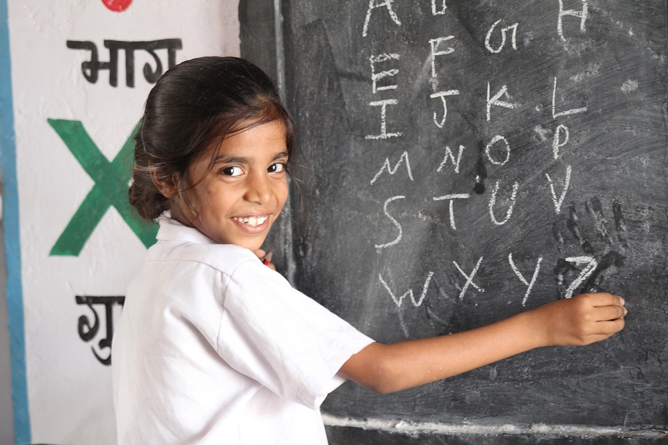
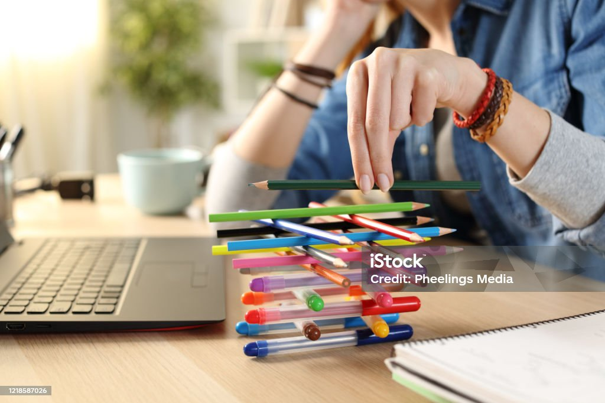

MADINA HIGH SCHOOL



Madina High School offers a comprehensive educational experience that prepares students for both academic and personal success. We provide a rigorous curriculum that spans a wide range of subjects, ensuring that our students gain a deep understanding of core academic disciplines while also exploring their individual interests and talents. Our extracurricular programs, including sports, arts, and clubs, offer opportunities for personal growth, teamwork, and leadership development. With a strong emphasis on moral values and community service, we aim to cultivate responsible and compassionate citizens. At Madina High School, we are dedicated to equipping our students with the skills, knowledge, and character needed to thrive in an ever-changing world.
Apart from that Madina High School offers Religious Programs which are held every Friday to ensure our Kids are well mannered and puts the Almighty first.The programs include words from Sheikhs and Pastors.....at time we bring Mentors to keep on motivating our Kids and Gratefully we see that the programs are helpful.....I think that All I can say....I would like to stop here.
Thank you!!!
After years of hard work, dedication, and countless challenges, the moment has finally arrived—graduation. It's a time of reflection and celebration, where all the late nights, early mornings, and unwavering determination have culminated in this significant achievement. The knowledge and experiences gained throughout this journey have not only shaped who they are today but also paved the way for a future filled with endless possibilities. As they step forward into the next chapter of their life, the memories of this academic journey will serve as a foundation, guiding them toward success in whatever path they choose to pursue.
Graduation marks the end of one chapter and the thrilling beginning of another. It’s a time to acknowledge not just the diploma earned, but the growth, friendships, and lessons that came with it. Every obstacle overcome, every new idea grasped, and every moment of doubt conquered has led to this moment of triumph. As they prepare to step into the world beyond the classroom, they carry with them not just knowledge, but a deeper understanding of themselves and their potential. The future is wide open, filled with opportunities to apply what they've learned, and the journey ahead promises to be as rewarding as the one just completed.
Books hold an essential place in our lives, serving as gateways to knowledge, imagination, and understanding. They are more than just collections of words; they are tools for learning and personal growth. Through books, we gain access to the thoughts and experiences of others, allowing us to learn from the past and gain insights into the present. Whether it's through history, science, literature, or self-help, books provide a wealth of information that can shape our perspectives and deepen our understanding of the world around us.
Moreover, books play a crucial role in developing critical thinking and empathy. By engaging with different viewpoints, narratives, and cultures, we learn to see the world from multiple angles. Fiction, in particular, allows us to step into the shoes of characters whose lives and experiences may be vastly different from our own. This exposure to diverse perspectives fosters empathy and broadens our horizons, making us more compassionate and open-minded individuals.
In addition to their educational and emotional value, books offer a unique form of escapism and entertainment. They transport us to different worlds, times, and realities, providing a respite from the stresses of daily life. Whether it’s the thrill of a mystery, the adventure of a fantasy, or the depth of a classic novel, books offer endless possibilities for exploration and enjoyment. In a world where we are constantly bombarded with digital distractions, the simple act of reading a book can be a profound and enriching experience, allowing us to disconnect and immerse ourselves in the power of storytelling.
After completing their studies, a world of opportunities opens up, offering various paths to explore and achieve personal and professional goals. One of the most significant opportunities is the ability to enter the workforce in a chosen field. With a degree or certification in hand, individuals can apply for jobs that align with their education and skills, giving them a competitive edge in the job market. This can lead to roles that not only provide financial stability but also allow for growth and development within a career, paving the way for future advancements.
Beyond traditional employment, further studies or specialized training can also be an attractive option. Many graduates choose to pursue advanced degrees, such as a master’s or doctorate, to deepen their expertise in a particular subject area. Others may opt for professional certifications or skill-based courses that can enhance their qualifications and open doors to niche industries or higher-level positions. This pursuit of further education often leads to more specialized and high-paying career opportunities.
Additionally, completing studies can also inspire entrepreneurship and innovation. With the knowledge and skills acquired, many individuals feel empowered to start their own businesses or ventures. The experience gained during their education often provides the confidence and foundation necessary to turn ideas into reality. Whether it's launching a startup, creating a product, or offering services, the entrepreneurial path offers the opportunity to be one’s own boss and contribute something unique to the world. This can lead to personal fulfillment and the potential for significant impact on society.